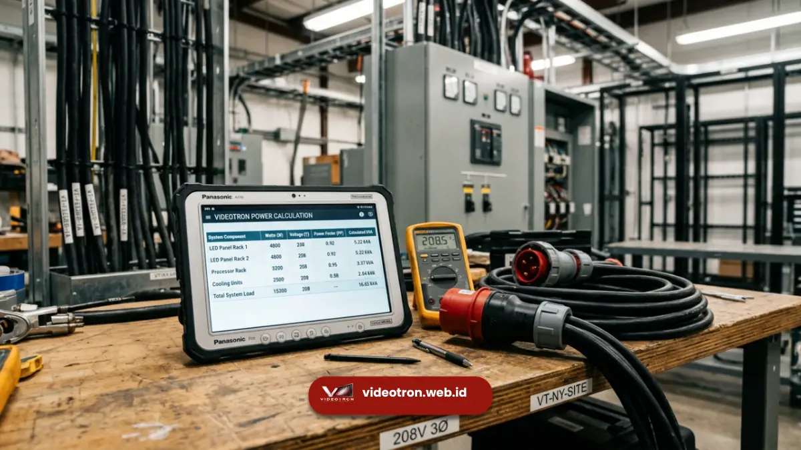

Cara menghitung kapasitas genset videotron adalah dengan mengalikan luas total panel LED dengan konsumsi watt per meter persegi, menambahkan margin pengaman 20-30 persen, lalu mengonversinya ke satuan kVA menggunakan power factor videotron.
Perhitungan yang tepat mencegah videotron flicker, restart, atau padam saat acara berlangsung.
Poin Penting Perhitungan:
- Kebutuhan daya videotron dihitung dari luas panel dikalikan konsumsi watt per meter persegi.
- Margin pengaman wajib ditambahkan untuk mengantisipasi lonjakan arus dan konten terang.
- Power factor videotron perlu dimasukkan dalam konversi ke satuan kVA.
- Kesalahan hitung kapasitas adalah penyebab umum videotron mati mendadak saat acara.
- Konsultasi dengan penyedia videotron berpengalaman membantu memastikan kapasitas genset tepat sasaran.
Banyak pihak yang menyewa videotron untuk acara korporat maupun publik masih menganggap perhitungan genset sebagai urusan teknis sederhana yang bisa ditaksir kasar. Padahal, kesalahan dalam menghitung kapasitas genset videotron adalah salah satu penyebab paling sering dari gangguan layar di lapangan, mulai dari flicker ringan hingga layar padam total di tengah momen penting acara.
Bagaimana Rumus Dasar Menghitung Kapasitas Genset Videotron?
Rumus dasar menghitung kapasitas genset videotron adalah total watt panel LED dibagi power factor, kemudian dikonversi ke kVA dan ditambah margin pengaman. Total watt panel LED didapat dari konsumsi daya per meter persegi dikalikan luas total panel videotron yang digunakan.
Sebagai ilustrasi umum, videotron dengan konsumsi daya rata-rata di kisaran ratusan watt per meter persegi akan menghasilkan total watt yang cukup besar begitu dikalikan dengan luas panel berukuran beberapa puluh meter persegi. Angka watt tersebut kemudian dibagi dengan power factor videotron, yang umumnya berada pada kisaran 0.8, untuk mendapatkan angka kVA riil yang dibutuhkan genset.
Setelah angka kVA dasar diperoleh, langkah berikutnya adalah menambahkan margin pengaman. Margin ini penting karena videotron tidak selalu menarik daya secara konstan; ada momen tertentu seperti saat startup atau ketika menampilkan konten dominan putih yang membuat konsumsi daya melonjak sesaat. Pembahasan lengkap mengenai bagaimana kebutuhan ini dipenuhi bisa Anda simak pada artikel genset untuk videotron yang membahas jenis genset dan penanganannya secara menyeluruh.
Apa Saja Variabel yang Memengaruhi Kebutuhan Daya Videotron?
Variabel yang memengaruhi kebutuhan daya videotron meliputi ukuran total panel, pixel pitch, jenis konten yang ditampilkan, serta kondisi lingkungan seperti suhu udara di lokasi acara. Setiap variabel ini berkontribusi terhadap besar kecilnya kapasitas genset yang perlu disiapkan.
- Ukuran total panel menjadi variabel paling dominan, karena semakin luas layar videotron, semakin besar pula jumlah modul LED yang menarik daya secara bersamaan
- Pixel pitch turut berpengaruh karena pitch yang lebih rapat umumnya berarti jumlah titik LED per meter persegi lebih banyak, sehingga konsumsi dayanya cenderung lebih tinggi
- Jenis konten yang ditampilkan memengaruhi konsumsi daya secara nyata; video dengan dominasi warna terang dan gerakan cepat menarik arus lebih besar dibanding tayangan statis berwarna gelap
- Kondisi suhu lingkungan turut berperan karena videotron yang beroperasi di lokasi bersuhu tinggi cenderung membutuhkan sistem pendingin tambahan yang juga menarik daya dari sumber yang sama

Perhitungan kVA yang tepat memastikan genset mampu menopang beban puncak videotron.Mengapa Margin Pengaman Penting dalam Perhitungan Genset?
Margin pengaman penting dalam perhitungan genset karena videotron memiliki lonjakan arus saat dinyalakan dan fluktuasi beban selama tayangan berlangsung, sehingga kapasitas yang pas-pasan berisiko membuat genset overload. Margin 20-30 persen dari kebutuhan dasar menjadi standar aman yang umum digunakan dalam industri.
Tanpa margin yang memadai, genset dapat mengalami trip otomatis sebagai mekanisme proteksi ketika beban melebihi kapasitas nominal. Kondisi ini langsung berdampak pada videotron yang tiba-tiba kehilangan daya di tengah tayangan, sebuah risiko yang tidak boleh terjadi terutama pada acara-acara penting seperti peluncuran produk atau acara seremonial resmi.
Selain margin untuk lonjakan arus, margin tambahan juga berguna sebagai ruang aman apabila di kemudian hari ukuran videotron yang disewa bertambah atau ada perangkat pendukung lain seperti sound system dan lighting yang turut menggunakan sumber daya yang sama.
Menghitung kapasitas genset videotron bukan sekadar mengalikan angka, melainkan mempertimbangkan luas panel, pixel pitch, jenis konten, kondisi lingkungan, hingga margin pengaman secara menyeluruh. Perhitungan yang keliru berisiko langsung terlihat di layar dalam bentuk flicker atau videotron yang mati mendadak.
Agar Anda tidak perlu repot menghitung sendiri dan menanggung risiko kesalahan teknis, tim videotron.web.id siap membantu menghitungkan kapasitas genset yang tepat sesuai spesifikasi videotron dan kebutuhan acara Anda.

Hawa Nadira
LED Technology Consultant dan Visual Educator
Konsultan dan spesialis solusi display digital berdedikasi tinggi yang fokus membagikan panduan edukatif mengenai penerapan teknologi layar LED videotron untuk kebutuhan interior modern di Indonesia.